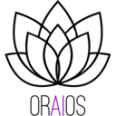

Free MCP servers (2026)
Model Context Protocol servers you can use for free, connecting Claude, Cursor, Codex and other MCP clients to your tools and data. Here are the top 25 of 170 from the AgentScout directory.
Updated
How we picked and ranked: tools are matched by category, the pricing each maker states and what each tool says it does. They are ranked by GitHub stars as recorded on each listing (link checks 2026-10-19); tools without a tracked repo follow, by listing maturity. No paid placements.

1. REA
MCP server and CLI that lets coding agents reverse engineer native binaries, Electron and JavaScript apps, .NET assemblies and live websites, using Ghidra, Hopper or IDA under the hood.
Pricing (as stated): Open source · Mature
2. MCP reference servers
Official collection of reference MCP servers.
Pricing (as stated): Open source · Mature
3. OmniRoute
Self-hosted AI gateway that puts hundreds of model providers behind one endpoint for Claude Code, Codex, Cursor and others, with quota-aware fallback and MCP/A2A support.
Pricing (as stated): Open source · Mature

4. Context7
MCP server and platform that feeds coding agents up-to-date, version-specific library documentation.
Pricing (as stated): Freemium · Mature

5. LiteLLM
Open-source AI gateway and Python SDK that calls 100+ LLM providers in the OpenAI format, with cost tracking, guardrails, load balancing and logging.
Pricing (as stated): Open source + cloud · Mature
6. CLI-Anything
Open-source project from HKUDS that generates agent-native command-line interfaces for existing software, codebases and web APIs, with CLI-Hub, a registry of community CLIs that coding agents can install and drive.
Pricing (as stated): Open source (Apache-2.0) · Active
7. Codebase Memory MCP
MCP server that indexes codebases into a persistent knowledge graph so coding agents can look up structure quickly.
Pricing (as stated): Open source · Mature

8. Kong Gateway
Cloud-native API, LLM and MCP gateway that adds routing, auth, multi-LLM support, semantic security and MCP traffic analytics through plugins.
Pricing (as stated): Open source + cloud · Mature
9. skills.sh
Vercel Labs' open-source CLI (npx skills) and directory for finding, installing and sharing agent skills across Claude Code, Codex, Cursor, OpenCode and 75+ other coding agents.
Pricing (as stated): Open source (MIT) · Active

10. GitHub MCP Server
GitHub's official MCP server for letting agents work with repositories, issues, pull requests and Actions.
Pricing (as stated): Open source · Mature

11. Google Workspace CLI
Official Google Workspace command-line tool for Drive, Gmail, Calendar, Docs and more, usable by agents.
Pricing (as stated): Open source · Mature
12. MCP for Blender
Community MCP plugin that lets Claude and other LLMs control Blender for prompt-driven 3D modeling, scene creation and manipulation.
Pricing (as stated): Open source · Mature

13. Serena
MCP toolkit that gives coding agents semantic code retrieval and editing, like IDE features.
Pricing (as stated): Open source · Mature

14. FastMCP
Pythonic framework for building MCP servers and clients quickly.
Pricing (as stated): Open source · Mature

15. MCP Python SDK
Official Python SDK for building Model Context Protocol servers and clients.
Pricing (as stated): Open source · Mature
16. n8n-MCP
MCP server that lets Claude, Cursor and other agents build n8n workflows for you.
Pricing (as stated): Open source · Mature

17. Magpie
Free, open-source menu bar app and local gateway that lets any coding agent (Claude Code, Codex, Gemini CLI, OpenCode and 60+ more) use any model provider or subscription, with failover when a quota runs out.
Pricing (as stated): Free and open source (MIT) · Active
18. MCP Toolbox for Databases
Open-source MCP server from Google for connecting agents to databases.
Pricing (as stated): Open source · Mature
19. Framelink Figma MCP
MCP server that gives Cursor and other coding agents Figma layout data so they can implement designs accurately in one shot.
Pricing (as stated): Open source · Mature
20. Corsair
Integration layer for connecting your users' apps to agents.
Pricing (as stated): Open source · Mature

21. Casdoor
Agent-first identity and access management with an MCP and agent gateway.
Pricing (as stated): Open source · Mature

22. MCP TypeScript SDK
Official TypeScript SDK for building MCP servers and clients.
Pricing (as stated): Open source · Mature

23. Portkey AI Gateway
Fast open-source AI gateway that routes requests to hundreds of LLMs through one API with fallbacks, load balancing and built-in guardrails.
Pricing (as stated): Open source + cloud · Mature
24. IDA Pro MCP
MCP server connecting IDA Pro to language models for AI-assisted reverse engineering.
Pricing (as stated): Open source · Mature
25. CocoIndex
Incremental data engine for keeping agent context and indexes fresh.
Pricing (as stated): Open source · Mature
FAQ
What are the best free MCP servers?
Ranked by tracked GitHub stars, the top free MCP servers in our directory are REA, MCP reference servers, OmniRoute, Context7, LiteLLM. Stars measure popularity, not fit, so compare a few against your own task.
How many free MCP servers does AgentScout list?
170 tools match. This page shows the top 25. Pricing mix on this page: Open source (21), Open source + cloud (3), Freemium (1).
Are these tools really free?
Pricing is what each maker states on their site. Open-source tools are free to self-host but may need a paid model API key or offer paid cloud plans; freemium tools have a free plan with limits. Check each official site.
Where can I see every tool for connecting tools with MCP?
Our task page lists all 382 tools we match to connecting tools with MCP.
Related: All tools for connecting tools with MCP · Best Open-Source MCP Servers · MCP & infra (170)
By role: For developers · For AI engineers · For MCP developers
All popular searches · AI agents by role · Free tools
Related categories: MCP & infra
Facts come from our directory listings; pricing is as each maker states it and can change. Check official sites before you choose.